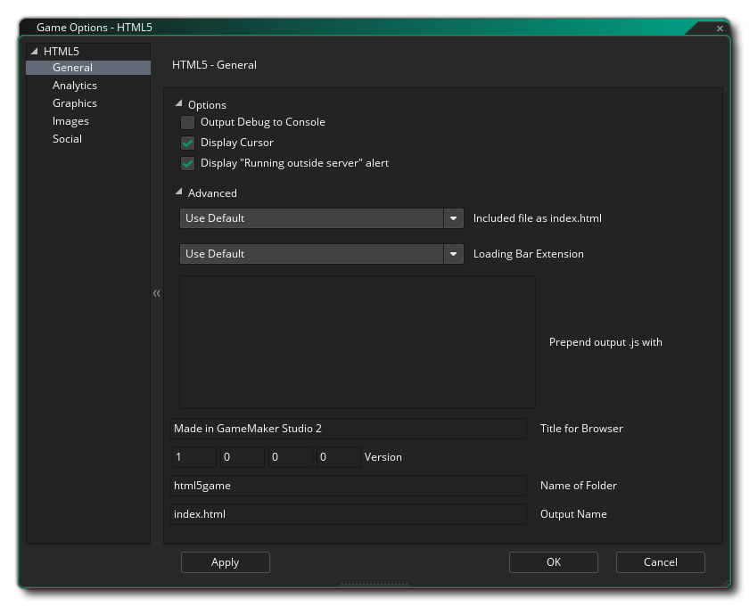
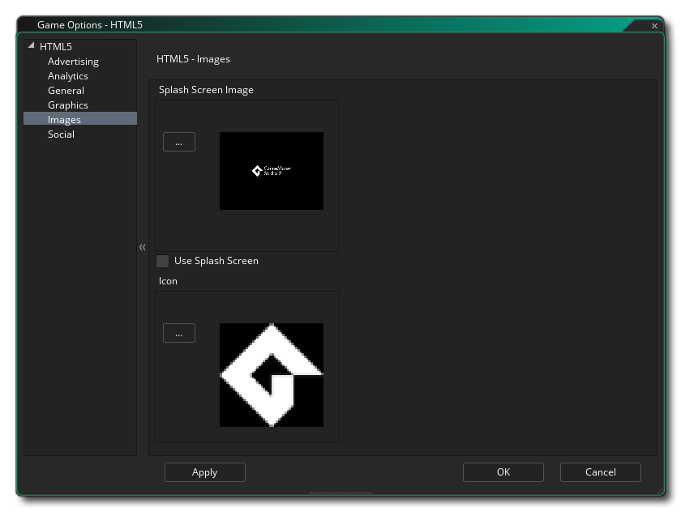

本节概述了可用于控制 HTML5 游戏项目编译方式的不同选项。不同的部分如下：

在本节中，你在顶部有一些全局选项：
- 输出调试到控制台： 这会将所有调试输出发送到浏览器的 JS 控制台。该选项默认关闭。
- 显示光标： 当鼠标光标位于游戏画布上时，将禁用鼠标光标。该选项默认为“开”。
- 显示 "运行外部服务器" 警报： 如果你在本地测试游戏（即：从你的计算机而不是服务器点击索引文件 - 不推荐），那么你通常会收到一条警告，通知你由于本地文件的浏览器安全性期望的事情可能无法正常工作。你可以通过取消选中此选项来取消此警告。此选项默认打开。
在全局设置下方，你有 高级 选项，它们是：
- 内含文件作为 index.html： 这是用于添加自定义 “index.html” 文件而不是默认情况下 GameMaker Studio 2 生成的预定义文件。如果你设计了网站或希望在所有 HTML5 版本中包含某些功能，这将非常有用。要使用的文件 必须 作为 内含文件 包含在游戏项目中。
- 进度条扩展： 这将把默认进度条更改为添加到 GameMaker Studio 2 项目的进度条 扩展 （可从 起始页 获得此演示）。
- 对输出的.js文件开头插入下列内容： 这里你可以在 *.js 输出前加上游戏所需的任何额外 JavaScript。例如，Chrome Store 应用可能要求你添加 window.localStorage = undefined; 输出 JS，你将使用此选项。
- 浏览器标题： 你可以在此处为运行游戏的浏览器的标题提供文本。
- 版本： 项目的版本号。
- 文件夹名称： 将存储 HTML5 游戏文件的文件夹的名称（默认为 “html5game”）。
- 输出名称： 这是输出 HTML 文件名，可以更改为默认的 “index.html” 以外的其他名称。

本部分允许你向游戏添加分析，允许你使用某些第三方产品来跟踪你的游戏及其销售或游戏信息。 你可以指定是使用 Flurry Analytics 还是 Google Analytics 来跟踪你的游戏。由于这些功能的性质，你一次只能激活一个，一旦你勾选了 启用 Flurry Analytics 或 启用 Google Analytics，你还应该将已分配的唯一 ID 添加到相应的区域。

在这里，你可以更改以下与游戏显示方式相关的详细信息（请注意，并非所有浏览器都以相同的方式显示你的游戏，因此请在尽可能多的浏览器上测试这些选项，以确保它们具有所需的效果）：
- 允许切换到全屏： 选中此项将允许用户使用 Mac 上的 <CTRL> + <CMD> + <F> 和 Windows 上的 F10 将游戏从窗口模式切换到全屏模式。该选项默认为“开”。
- 对像素间颜色进行插值： 打开插值，基本上会使像素 “平滑”。对于清晰的像素图形，它应该是关闭的，但如果你有漂亮的 alpha 混合和平滑的边缘图形，最好打开。默认为关。
- 将游戏置于浏览器中心： 选中此项将自动将游戏屏幕置于运行游戏的浏览器中心。
- 使用内置粒子系统： 此选项将导出你的游戏中内置粒子系统所需的精灵。这些精灵存储在单独的纹理页面中，这意味着它们不是为此平台生成粒子的最有效方法，因此建议你（除非使用 WebGL）取消选中此选项并使用你自己的粒子精灵，这将与你的游戏一起存储在主纹理页上。
- WebGL: 选择是否关闭 WebGL 支持，使其成为可选（自动检测），或使其成为游戏必需。应该注意的是，要在所有情况下测试性能，你应该将其设置为禁用，然后通常将其设置为自动检测以进行发布。 使其成为必需可能会大大降低你的游戏与不同浏览器类型的兼容性。
- 缩放： 你的游戏可以配置为自动缩放绘制画布以在浏览器中保持纵横比，或者你可以选择将其拉伸以适应。拉伸到适合选项不会在浏览器中全屏显示游戏，而是按照游戏的第一个房间的定义，拉伸贴图以适应画布大小。
最后，可以选择设置 纹理页 的大小。默认（和最兼容）大小为 2048 x 2048，但你可以选择 256 x 256 到 8192 x 8192 之间的任何值。还有一个 预览 的按钮，它将为该平台生成纹理页面，然后打开一个窗口，以便你可以看到它们的外观。如果你希望查看纹理页面的结构并防止纹理页面比必要的更大（或更小），这可能非常有用。
注意： 请小心，纹理页面的大小越大，游戏的兼容性就越差。

在此部分中，你可以定义网站图标和启动画面。 该图标应该被创作为 *.ico 文件，大小可以是 16 x 16、32 x 32、48 x 48 或 64 x 64 像素，颜色深度可以是 8 位、24 位或 32 位。 启动画面应该是用于保存游戏的画布大小，如果勾选 使用启动画面 选项，则会覆盖任何进度条（即：你可以有一个进度条，或者一个启动画面，但不能同时使用两者）。允许更小或更大的图像，但将缩放至适合大小。
值得注意的是，GameMaker Studio 2 有一个叫做 项目图像生成器 的工具，可用于自动创建游戏编译到不同目标平台所需的所有图像。 如果使用此工具，则应修改创建的图像以确保它们符合你的要求。

社交标签用于在游戏中设置 Facebook 通信。 如果你需要 Facebook 功能，则需要单击 “使用 Facebook” 复选框，然后提供 Facebook 应用程序 ID 和 Facebook 应用程序显示名称。请注意，所有 Facebook 功能都是通过扩展程序访问的，当你第一次勾选使用 Facebook 框时，系统将提示你从市场下载并安装 Facebook 扩展程序（你可能需要先登录你的 YoYo 帐户才能下载）。